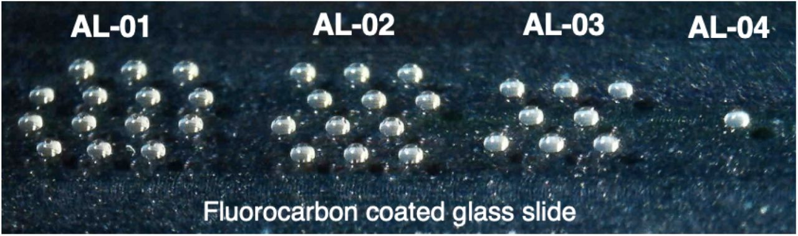

nPOP is a droplet based method that for single cell proteomic sample preperation. We see nPOP as a conceptual framework moreso than a specific workflow. In this post I will talk about why we designed nPOP, how we recommend its use, how to addapt nPOP for different workflows, and adress aspects that have not been fully optomized and hopefully may be further explored by others. nPOP was developed with several goals in mind.
To achieve these goals, we took a unique approach to sample preperation, abandoning familiar staples of mass spectrometry sample preperation such as tube and wells. In our approach, single cells are prepared in nanoliter droplets on the surface of an unpatterned glass slide with a flourocarbon coating. In these droplets, we lyse cells, digest proteins to peptides, label peptides for mutiplexing, and pool samples into a set. The samples are dispensed into a 384 well plate where they can be picked up by most standard autosamplers. We use the Ultimate 3000 from Thermo. To perform the sample preperation, we use the CellenONE liquid handling and cell dispensing platform made by Scienion. The system uses acoustic technology to reliably dispens cells and various reagents in droplets of ~300 picoliters.
We have designed the following workflows for mutiplexing with TMT, mTRAQ, and label free. We are strong advocates of using multiplxed workflows over labe free methods. The reasons for this are two fold; 1) mutiplexing samples provides the opportunity to significantly increase throughput which is essential for many single cell applications and 2) labeled methods allow for transfering identifications for peptides that are plenty abundant for reliable quantitation, but insufficiently abundant for confident identification. You can read more about both DDA and DIA based approches for these strategies in the links below:
dfsdf